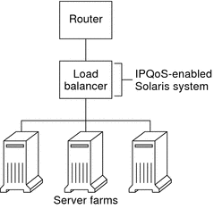
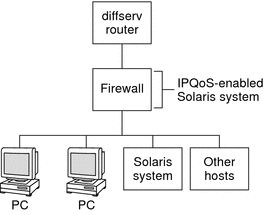

| Previous | Next |
1. Solaris TCPIP Protocol Suite (Overview)
2. Planning an IPv4 Addressing Scheme (Tasks
3. Planning an IPv6 Addressing Scheme (Overview)
4. Planning an IPv6 Network (Tasks)
5. Configuring TCP/IP Network Services and IPv4 Addressing (Tasks)
6. Administering Network Interfaces (Tasks)
7. Enabling IPv6 on a Network (Tasks)
8. Administering a TCP/IP Network (Tasks)
9. Troubleshooting Network Problems (Tasks)
10. TCP/IP and IPv4 in Depth (Reference)
12. About Solaris DHCP (Overview)
13. Planning for DHCP Service (Tasks)
14. Configuring the DHCP Service (Tasks)
15. Administering DHCP (Tasks)
16. Configuring and Administering DHCP Clients
17. Troubleshooting DHCP (Reference)
18. DHCP Commands and Files (Reference)
19. IP Security Architecture (Overview)
21. IP Security Architecture (Reference)
22. Internet Key Exchange (Overview)
24. Internet Key Exchange (Reference)
25. Solaris IP Filter (Overview)
28. Administering Mobile IP (Tasks)
29. Mobile IP Files and Commands (Reference)
30. Introducing IPMP (Overview)
31. Administering IPMP (Tasks)
Part VI IP Quality of Service (IPQoS)
32. Introducing IPQoS (Overview)
33. Planning for an IPQoS-Enabled Network (Tasks)
General IPQoS Configuration Planning (Task Map)
Planning the Quality-of-Service Policy
How to Prepare a Network for IPQoS
How to Define the Classes for Your QoS Policy
How to Define Filters in the QoS Policy
How to Plan Forwarding Behavior
How to Plan for Flow Accounting
Introducing the IPQoS Configuration Example
34. Creating the IPQoS Configuration File (Tasks)
35. Starting and Maintaining IPQoS (Tasks)
36. Using Flow Accounting and Statistics Gathering (Tasks)
Planning the Diffserv Network Topology
To provide differentiated services for your network, you need at least one IPQoS-enabled system and a Diffserv-aware router. You can expand this basic scenario in a variety of ways, as explained in this section.
Hardware Strategies for the Diffserv Network
Typically, customers run IPQoS on servers and server consolidations, such as the Sun Enterprise™ 0000 server. Conversely, you can also run IPQoS on desktop systems such as UltraSPARC® systems, depending on the needs of your network. The following list describes possible systems for an IPQoS configuration:
Solaris systems that offer various services, such as web servers and database servers
Application servers that offer email, FTP, or other popular network applications
Web cache servers or proxy servers
Network of IPQoS-enabled server farms that are managed by Diffserv-aware load balancers
Firewalls that manage traffic for a single heterogeneous network
IPQoS systems that are part of a virtual local area network (LAN)
You might introduce IPQoS systems into a network topology with already functioning Diffserv-aware routers. If your router does not currently offer Diffserv, consider the Diffserv solutions that are offered by Cisco Systems, Juniper Networks, and other router manufacturers. If the local router does not implement Diffserv, then the router passes marked packets on to the next hop without evaluating the marks.
IPQoS Network Topologies
This section illustrates IPQoS strategies for various network needs.
IPQoS on Individual Hosts
The following figure shows a single network of IPQoS-enabled systems.
Figure 33-1 IPQoS Systems on a Network Segment

This network is but one segment of a corporate intranet. By enabling IPQoS on the application servers and web servers, you can control the rate at which each IPQoS system releases outgoing traffic. If you make the router Diffserv aware, you can further control incoming and outgoing traffic.
The examples in this guide use the “IPQoS on an individual host” scenario. For the example topology that is used throughout the guide, see Figure 33-4.
IPQoS on a Network of Server Farms
The following figure shows a network with several heterogeneous server farms.
Figure 33-2 Network of IPQoS-Enabled Server Farms
In such a topology, the router is Diffserv aware, and therefore able to queue and rate both incoming and outgoing traffic. The load balancer is also Diffserv-aware, and the server farms are IPQoS enabled. The load balancer can provide additional filtering beyond the router by using selectors such as user ID and project ID. These selectors are included in the application data.
This scenario provides flow control and traffic forwarding to manage congestion on the local network. This scenario also prevents outgoing traffic from the server farms from overloading other portions of the intranet.
IPQoS on a Firewall
The following figure shows a segment of a corporate network that is secured from other segments by a firewall.
Figure 33-3 Network Protected by an IPQoS-Enabled Firewall
In this scenario, traffic flows into a Diffserv-aware router where the packets are filtered and queued. All incoming traffic that is forwarded by the router then travels into the IPQoS-enabled firewall. To use IPQoS, the firewall must not bypass the IP forwarding stack.
The firewall's security policy determines whether incoming traffic is permitted to enter or depart the internal network. The QoS policy controls the service levels for incoming traffic that has passed the firewall. Depending on the QoS policy, outgoing traffic can also be marked with a forwarding behavior.
| Previous | Next |